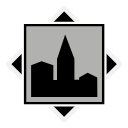
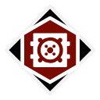

Map
Nearby locations
The 10 closest locations, measured in a straight line between the map markers (1 world unit is 1 metre), with the direction to go from here.
| Location | Kind | Region | Distance | Direction |
|---|---|---|---|---|
| Kålleby Generator | FNIX site | South Coast | 220 m | E |
| Kållebyviken Control Point | Control point | South Coast | 249 m | S |
| Breviken Camping | FNIX site | South Coast | 348 m | N |
 Lännbacka | Settlement | South Coast | 408 m | SE |
 Knarrebo | FNIX site | South Coast | 572 m | S |
| Knarrebo Generators | FNIX site | South Coast | 581 m | S |
| Ängnäsberg Data Center | FNIX site | South Coast | 608 m | NE |
| Ängsnäs Manor | FNIX site | South Coast | 721 m | NW |
| Tångekil | Settlement | South Coast | 759 m | SW |
| Guteby Farm | FNIX site | South Coast | 771 m | SE |
Safehouse
No safehouse here. The nearest one is Breviken Camping (South Coast), 323 m to the north-west.
Loot
The location's files list 39 loot crate spawn points. These are the crates your save counts for this location's loot progress.
Placed loot within 200 m that is closer to Sävered Radar Mast than to any other location (from the interactive map's Extra Locations layer).
| Category | Count | Breakdown |
|---|---|---|
| Weapons | 1 | Q3 1 |
| Items | 4 | Standard First Aid Kit 2, Advanced First Aid Kit 1, Grenade 1 |
| Crate spots (map layer) | 58 | Ammo boxes 32, Equipment boxes 13, Apparel packs 8, Weapon boxes 5 |
From the game files
Two crate numbers. The crate spawn points are the loot crate spawn points listed in the location files: what your save tracks for a location's loot progress. The crate spots (map layer) are every crate spot of the interactive map's loot layer within 200 m that is nearer to this location than to any other, whichever game file it comes from, so the two numbers rarely match. Neither means a crate is always there: the game may leave a spot empty.
Weapons, attachments and other single items placed here:
| Item | Quality | Count |
|---|---|---|
| M/46 "Kpist" SMG (Good) | Good | 1 |
Missions
No mission text mentions Sävered Radar Mast by name. See the missions of the South Coast region.
From the game files
Distances are straight lines on the map between marker positions. A location's area in the game is not a circle, so the 300 m and 200 m radii on this page are a practical approximation, not the game's own borders.